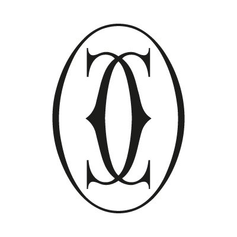

EVERYWATCH
AUCTION SEASON REPORT
SEPTEMBER 2024 - HYPEBEAST VERSION
Introduction
The September 2024 New York Watch Auctions marked a significant moment in the luxury timepiece market, showcasing an exceptional collection of watches from renowned brands and attracting global attention.
This report delivers a detailed analysis of the auction outcomes, highlighting the distribution of sales across various dimensions including brands, models, case materials, and bracelet types.
By examining data from two prominent auction houses—Phillips and Christie's—we offer valuable insights into current market dynamics, emerging trends, and the performance of leading watch brands during this pivotal month.
Methodology
The data presented in this report was collected from auction results published by Phillips and Christie's, covering the period of the September 2024 New York auction season.
Our comprehensive breakdown encompasses total lots offered, overall sales figures, and achieved sell-through rates, providing a nuanced understanding of the market's strength and buyer preferences.
This report identifies standout timepieces that garnered significant interest, reflecting evolving collector tastes and investment patterns in the luxury watch sector.
Limitations
Due to our inability to source some of the data used in the report, we were unable to provide a full replica of the original report. As such, differences will exist between our results and those of the original report.
Key Highlights
Total Sales
$8,497,330.82
- Strong Overall Sales: The auction season resulted in total sales of USD 8,497,330.82 across both Phillips and Christie's, with Phillips accounting for 69% of the total, while Christie's contributed 31%. This demonstrates strong demand from buyers, particularly for lots at Phillips.
- Impressive Performance Above Estimate: Out of the total lots sold, 155 were sold above their estimated prices, representing over 40.7% of all sales. This indicates robust demand for certain timepieces, as competitive bidding pushed prices higher than expected.
- Brand Leadership: Patek Philippe and Rolex were the leading brands, with Patek Philippe contributing the largest share of sales by brand, followed closely by Rolex.
- Case Material Trends: Watches made from stainless steel and 18K gold saw strong demand, while platinum and other precious metals also contributed significantly to the total sales.
Auction Sales Performance
The auction results reveal a strong performance, with 43.3% of the lots selling within their estimated price range, reflecting accurate pricing strategies by the auction houses.
In addition, 40.7% of the lots sold above their estimates, suggesting strong demand and competitive bidding. Only 16% of the lots were sold below their estimate, reflecting a relatively small number of underperforming lots.
Importantly, none of the lots went unsold, which signals a very successful auction with high buyer interest.
Phillips outperformed Christie's, accounting for 69% of the total sales with $5.86 million, while Christie's contributed 31%, or $2.64 million.
This disparity in sales volume could suggest that Phillips either offered higher-value lots or attracted more competitive bidding. Both auction houses handled a large number of lots but Phillips clearly led in
total revenue generated.
Phillips sold 207 lots compared to Christie's 174 lots, further reinforcing its lead in the auction. Despite the difference in lots handled and total sales, both auction houses achieved perfect sell-through rates,
showing that every lot found a buyer. This highlights the strong interest in luxury watches from collectors and enthusiasts during the auction.
The high percentage of lots sold above their estimates suggests that certain items were highly sought after, likely due to their rarity or desirability.
This competitive bidding atmosphere was a boon for sellers, as many were able to exceed their price expectations, demonstrating a favorable market environment.
Overall, Phillips dominated the auction in terms of total sales and lots offered, while both auction houses achieved impressive results with all lots sold.
A large portion of the lots met or exceeded their price estimates, indicating a robust and competitive luxury watch market that continues to attract buyers.
Top Brands by Total Sales

Patek Phillipe
$2,298,463.9

Rolex
$1,621,770.1

Audemars Piguet
$771,408.1
F.P Journe
$353613.6

Cartier
$312,849.8
The results of the auction reveal the clear dominance of Patek Philippe and Rolex, which together account for a significant portion of total sales.
Patek Philippe led the auction with $2,298,463.9 million in sales, solidifying its position as the top brand. Rolex followed closely, achieving around $1.5 million.
These two brands continue to be the most recognized and sought-after by collectors, reflecting their ongoing influence and desirability in the luxury watch market.
Audemars Piguet, F.P. Journe, and Cartier performed well, though at a lower level than the top two, with sales ranging from $0.6 to $1 million. These brands demonstrate strong demand,
particularly for iconic models like Audemars Piguet's Royal Oak and F.P. Journe's artisanal offerings, which cater to collectors looking for high craftsmanship and exclusivity. Cartier remains a favorite for its
timeless designs and heritage, maintaining steady interest from buyers.
Brands like Jaeger-LeCoultre, Vacheron Constantin, Roger Dubuis, and Piaget contributed more modest sales, with totals between $0.2 million and $0.4 million. While these brands are well-regarded,
their performance in this auction suggests either fewer pieces on offer or less competitive bidding compared to the leading brands.
Conclusively, the auction results highlight the strength of the luxury watch market, where established and iconic brands like Patek Philippe and Rolex command the highest attention and sales.
At the same time, independent and niche brands such as F.P. Journe continue to attract dedicated collectors, indicating a balanced market with opportunities for both mainstream luxury and exclusive timepieces.
Buyer preferences remain focused on brands with strong reputations, limited availability, and a history of delivering timeless value.
Top Models by Total Sales
Nautilus
$647,319.0

Cosmograph Daytona
$371,417.6
Aquanaut
$315,772.8
Royal oak perpetual calendar black ceramic
$199,136.0

Royal oak openworked perpetual calendar
$184,912.0
Patek Philippe’s Nautilus leads total sales, nearing $0.65 million, underscoring its desirability and rarity in the market. Following closely is Rolex’s Cosmograph Daytona, which brought in about $0.5 million,
reflecting its iconic status and strong demand among collectors.
The Patek Philippe Aquanaut and Audemars Piguet Royal Oak Perpetual Calendar models also performed well, highlighting the appeal of luxury sports watches. Both brands maintain a strong foothold,
with collectors seeking out these exclusive models.
Other notable mentions include the Patek Philippe Calatrava and F.P. Journe Centigraphe Souverain, both bringing in solid sales, with collectors valuing their craftsmanship and mechanical innovation.
Overall, the chart emphasizes the dominance of Patek Philippe, Rolex, and Audemars Piguet in the high-end watch market.
Total Sales by Case Size

The 40mm case size emerged as the clear leader in total sales, contributing approximately $2 million. This size's popularity reflects its broad appeal, offering a perfect balance between classic proportions and modern versatility.
Collectors appreciate the 40mm case for its ability to suit various styles, from sport to dress watches, making it a go-to size for both traditional and contemporary designs.
The 42mm case size followed closely, with sales nearing $1 million. This size indicates growing interest in larger, more assertive watches, especially in the luxury sports watch category.
Larger cases are often favored for their bold wrist presence and modern aesthetics, appealing to collectors seeking statement pieces that stand out.
Mid-range sizes, including 36mm, 39mm, and 41mm, also performed well, underscoring the continued demand for smaller, more refined watches. These sizes, often associated with vintage or understated designs,
appeal to collectors who prioritize elegance and timelessness over boldness. Their strong performance indicates that there is still a significant market for watches that balance tradition and modern functionality.
In summary, the results show that while there is demand across a range of case sizes, the most popular sizes fall within the 40mm to 42mm range, reflecting a strong preference for versatility and bold yet wearable designs.
Smaller and larger case sizes saw less activity, suggesting that while they cater to specific tastes, most collectors favor more moderately sized watches. The auction results emphasize that mid-sized watches remain dominant in the luxury market, balancing both modern trends and classic appeal.
Total Sales by Case Material

Stainless steel stands out as the most popular case material in the auction, generating the highest total sales, just above $2 million. This reflects the strong demand for stainless steel watches,
which are favored for their versatility, durability, and more accessible price point compared to precious metals. Stainless steel is widely used in both sports and dress watches,
contributing to its broad appeal among collectors.
Following stainless steel, both 18K pink gold and 18K white gold performed well, each contributing significantly to total sales. These materials are prized for their luxury appeal,
adding both aesthetic value and exclusivity to the timepieces. Gold, in its various forms, remains a symbol of wealth and prestige, and its continued presence among the top materials reflects the preferences of buyers
seeking higher-end luxury watches.
Platinum also made a strong showing in the auction, reflecting its premium status in the luxury market. Known for its rarity, weight, and durability, platinum watches often command higher prices, appealing to collectors
looking for the most exclusive timepieces. Other gold variants, such as 18K yellow gold and 18K pink gold with diamonds, also contributed to sales, but on a smaller scale compared to stainless steel and other gold types.
In conclusion, stainless steel led the auction by a significant margin, reflecting its widespread appeal. Gold and platinum also showed strong performance, highlighting the ongoing demand for precious metals in luxury watches.
The mix of materials suggests that collectors appreciate both the affordability and versatility of stainless steel, as well as the prestige and exclusivity that comes with gold and platinum watches. Overall,
the results indicate a balanced market catering to a range of tastes and budgets.
Total Sales by Bracelet Material

Leather bracelets generated the highest total sales, reaching over $1.6 million. This highlights the popularity of leather, a classic material in luxury watches known for its comfort, versatility, and timeless elegance.
Leather straps are often paired with both vintage and modern watches, making them a favorite choice among collectors.
Crocodile bracelets followed closely, bringing in significant sales just under $1.4 million. Crocodile leather is highly prized for its exotic and luxurious appearance, appealing to buyers looking for premium materials.
Its popularity in high-end watches reflects its association with exclusivity and craftsmanship.
Other materials such as the stainless steel Rolex Oyster bracelet and various gold and ceramic bracelets from brands like Patek Philippe and Audemars Piguet contributed more modestly to total sales.
These materials cater to buyers seeking durable and visually distinctive options, particularly for sports watches or models that emphasize unique design elements.
In summary, leather and crocodile dominated the auction in terms of bracelet materials, emphasizing the continued preference for traditional and luxurious strap options.
While metal and ceramic bracelets also saw notable sales, collectors leaned more toward high-quality leather straps, reflecting the balance between elegance and luxury in the market.
Auction House Performance Comparison
| Auction House |
Total Sold Lots |
Total Unsold Lots |
Total Lots Sold Within Estimate |
Total Lots Sold Below Estimate |
Total Lots Sold Above Estimate |
Sale Rate |
| Phillips |
207 |
0 |
104 |
15 |
88 |
100% |
| Christie's |
174 |
0 |
61 |
46 |
67 |
100% |
Phillips led the September 2024 watch auctions with 207 lots sold, while Christie's sold 174.
Both auction houses achieved a perfect 100% sale rate, with no unsold lots, indicating strong buyer interest and a successful auction event for both.
Phillips had significantly more lots selling within the estimated range, with 104 lots compared to Christie's 61. This suggests that Phillips' pricing estimates were more aligned with market expectations,
allowing a larger portion of their lots to meet the pre-sale estimates. Christie's, on the other hand, had fewer lots sold within the estimated range, indicating a greater variability in final sales prices
relative to expectations.
When looking at lots sold below the estimate, Christie's had more challenges, with 46 lots selling below the estimate, compared to only 15 for Phillips. This shows that Phillips performed better in
maintaining higher selling prices relative to the estimates, while Christie's faced some underperformance on a larger portion of their lots.
Overall, Phillips outperformed Christie's in terms of achieving higher accuracy in pricing and fewer below-estimate sales. Both auction houses enjoyed a high level of demand, as reflected by their perfect sale rates,
but Phillips demonstrated stronger control over pricing, leading to more lots sold within or above the estimate.
Total Sales by Category


Modern watches overwhelmingly dominated the auction, generating over $7 million in total sales. This suggests a strong preference among collectors for contemporary timepieces, likely due to their widespread availability, advanced technology, and appeal to a broader audience.
In contrast, categories like vintage, independent, and neo-vintage contributed smaller portions to the total sales, with vintage watches leading among these.
Independent watches, despite contributing less to total sales, command the highest average prices, exceeding $100,000 per watch. This indicates that independent watchmakers are highly valued for their exclusivity,
craftsmanship, and rarity. Collectors are willing to pay a premium for these timepieces, which cater to more niche tastes.
Modern watches, while leading in total sales volume, tend to have more accessible price points. Their popularity likely stems from the fact that they appeal to a wider range of buyers, offering a balance between
innovation and affordability, making them attractive to a broader market.
Vintage and neo-vintage watches have comparable average prices, though vintage watches achieved better sales overall. These categories attract collectors interested in historical significance and classic designs,
though neo-vintage, which blends modern and vintage elements, remains an emerging area in the luxury watch market.
To conclude, modern watches are preferred in terms of volume, while independent watches hold the highest value among collectors. Vintage and neo-vintage watches continue to appeal to a more specialized group of buyers,
highlighting a diverse market that caters to various preferences from modern designs to rare, handcrafted pieces.
Summary
The September 2024 watch auction demonstrated strong performance across various categories, with modern watches dominating total sales, accounting for over $7 million.
While modern watches were the most popular in terms of volume, independent watch brands commanded the highest average prices, highlighting the value placed on exclusivity and craftsmanship.
Patek Philippe and Rolex continued to lead the market in total brand sales, while models like the Nautilus and Cosmograph Daytona were the top performers. Stainless steel was the most favored case material,
reflecting its versatility, while leather and crocodile bracelets dominated the bracelet category, indicating a preference for classic, luxurious materials.
Overall, the auction results reflect a healthy and diverse luxury watch market, catering to a wide range of buyer preferences. Collectors showed strong interest in both contemporary and independent timepieces,
while traditional materials like stainless steel, leather, and gold remained highly sought after. This balance between modern innovation, artisanal craftsmanship, and timeless luxury suggests that the market remains robust,
with buyers willing to invest in both iconic brands and unique, high-end pieces.